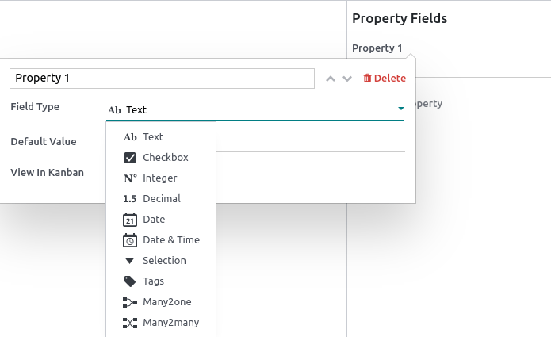
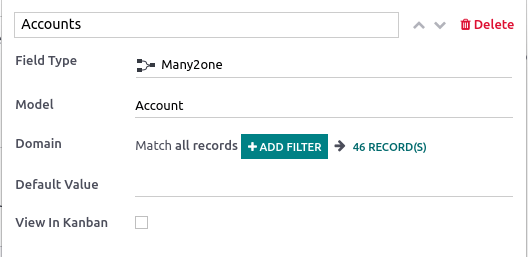

Properties¶
Properties are fields containing data and that can be added to articles by any user with write access. These fields are shared between all the child articles and article items under the same parent.
Note
To be able to add properties, an article must be either a child article or an article item.
Add property fields¶
Hover above the first-level header to make the buttons appear. Click , select the type and add a default value if needed. To make the fields appear in kanban views, check View in Kanban as well. To validate and close the property creation window, click anywhere.
The different types assess what the field content can be:
Types |
Uses |
|---|---|
Text |
Allows adding any content with no restriction. |
Checkbox |
Add a checkbox. |
Integer |
Allows adding integer numbers. |
Decimal |
Allows adding any number. |
Date |
Allows selecting a date. |
Date & Time |
Allows selecting a date and time. |
Some field types need to be configured:
Types |
Uses |
|---|---|
Selection |
Add a drop-down selection menu with restricted values that have been set at the property creation. To set it up, click Add a Value next to the Values field. Enter predetermined values and press enter to validate; you can enter as many values as needed. Click anywhere to close the property creation window. |
Tags |
Allows creating and applying as many tags as needed. To set it up, enter your |
Many2one |
Choose from a list of records that result from a model’s domain. You can only select one result. To set it up, click Search a Model in the Model field, select the model. Match all records by clicking ## Record(s), or filter the results by clicking + Add Filter and show the records by clicking ## Record(s). |
Many2many |
Choose from a list of records that result from a model’s domain. You can select as many results as needed. To set it up, click Search a Model in the Model field, select the model. Match all records by clicking ## Record(s), or filter the results by clicking + Add Filter and show the records by clicking ## Record(s). |
Delete property fields¶
To remove a property, click the pencil icon next to the targeted property, then click .
Warning
Once a property field is deleted, you cannot retrieve it.
Hide the property panel¶
To hide the property sidebar panel, click the gear (⚙) button.